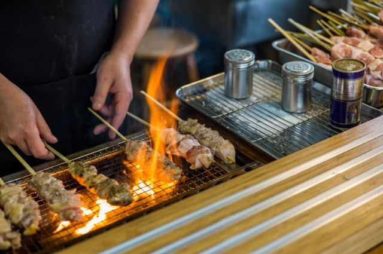

GASTRONOMÍA
La comida es parte importante del viaje. Y si bien hay alternativas como 7-eleven o McDonald's, es mejor no dejar pasar la oportunidad de probar los platos característicos de este hermoso país.
Japón tiene una gastronomía amplia y aquí solo te mencionamos algunos de los más famosos.
¿Necesitas más información? ¿Alergias, preferencias? ¿Algún plato que no hemos mencionado? Te haremos una guía personalizada.
Hablemos del Otoshi:
Es un aperitivo que sirven en casi todos los izakayas y acompaña a la priemra bebida aunque no lo hayas pedido.
Es una comida simple que pretende calmar el hambre d elos clientes mientras piden.
Generalmente, y esto es importante saberlo, tiene un cargo adicional y es agregado a la cuenta total de la comida. No es frecuente que se explique a los clientes de antemano.
Restaurantes Kaiseki
En estos restaurantes el menú está cerrado de antemano. Se escoge el número de platos deseados y será el chef el que decida el resto.
Los elementos básicos que encontrarás son: pescado a la brasa, una sopa y un plato de arroz, opcionalmente incluye verduras de temporada preparadas de nuevas formas.
Yakitori.
Los yakitori, siendo brochetas de pollo a la brasa, tradicionalmente son un tipo de kushiyaki, lo cuál consiste en cocinar ingredientes insertados en una brocheta.
Sushi

Si bien en muchos países esta comida se considera como cara e incluso elegante, en su país de origen se disfruta de muchas formas.
Desde un izakaya hasta un refinado restaurante.
El sushi consiste en arroz aliñado con vinagre, ligeramente dulce, y acompañado de una guarnación también llamada neta, que puede ser pescado, marisco, huevo, verdura, e incluso carne.
La etiqueta del sushi
Hay personas amantes de la salsa de soja, ¡y eso está bien! Pero si vamos a sumerginos como una pieza de sushi en la cultura japonesa, está aún mejor saber qué debemos hacer una vez vayamos a comer nuestro sushi.
En cuanto a la mencoinada salsa, sumerge primero la parte de la neta sin que el arroz se humedezca.
Usa palillos para comer el sushi, aunque si no son lo tuyo, también puedes usar las manos, especialmente en los restaurantes de gama alta.
El jengibre sirve para limpiar el paladar.
Si vas a un kaitenzushi, donde los platos van en una cinta, puedes cogerlos directamente de ahí, pero nunca vuelvas a poner el plato en la cinta.
Ramen
Este plato tiene su origen en China, aunque a día de hoy lo asociamos a los platos nipones. No se tiene muy claro cómo llegaron a las tierras japonesas, se dice que en el 1910 un restaurante chino de Asakusa comenzó a servir este plato.
Hay muchas formas de prepararlo, ya que varía depenediendo de la región en la que nos encontremos. La base de los caldos, el tipo de miso, los ingredientes...
Encontrar un lugar para comer ramen es muy sencillo, aunque lo más seguro es que debas hacer cola.
Son lugares pequeños, así que aconsejamos que una vez termines de comer, no tardes mucho en levantarte para que pueda pasar el siguiente.

Etiqueta gastronómica
Comenzando por algo importante. Los palillos, hay cosas que nunca debemos hacer.
Clavar los palillos verticalmente en un tazón de arroz ya que se asemeja a un ritual funerario. En lugar de hacer esto colóquelos en el soporte para palillos o sobre la parte superior del tazón.
No pasar comida de palillo a palillo.
Usar la parte trasera de los palillos para coger algo del plato.
En una situación formal, los alimentos suelen compartirse entre los comensales, asi que en lugar de usar el extremo que nos llevamos a la boca para coger del plato a compartir, se usa el contrario para transferir los alimentos a nuestro plato.
Algo que quizás nos suene extraño, ya que no estamos acostumbrados, es que es aceptable sorber los fideos. Sin embargo, se ve de mala educación hacer ruidos fuertes como eructar o chasquear los labios. Hay que mantener un nivel moderado de ruido.
En lugar de acercar tu boca al plato, hazlo al contrario.
Para no tener que cortar la comida con los dientes y devolverla al plato, córtala primero en tamaño bocado.
¿Vas a servir la bebida? Sujeta la botella con la mano derecha, etiqueta hacia arriba y apoya la base sobre tu mano izquierda.
Sirve primero al resto de comensales. Si, por el contrario eres a quién están sirviendo, es de buena educación sujetar el vaso inclinándolo ligeramente.
No hace falta que termines tu vaso, ya que un vaso vacío siempre se debe rellenar.
Y por último, al contrario que con la bebida, una muestra de respeto y satisfacción, es comer hasta el último grano de arroz.